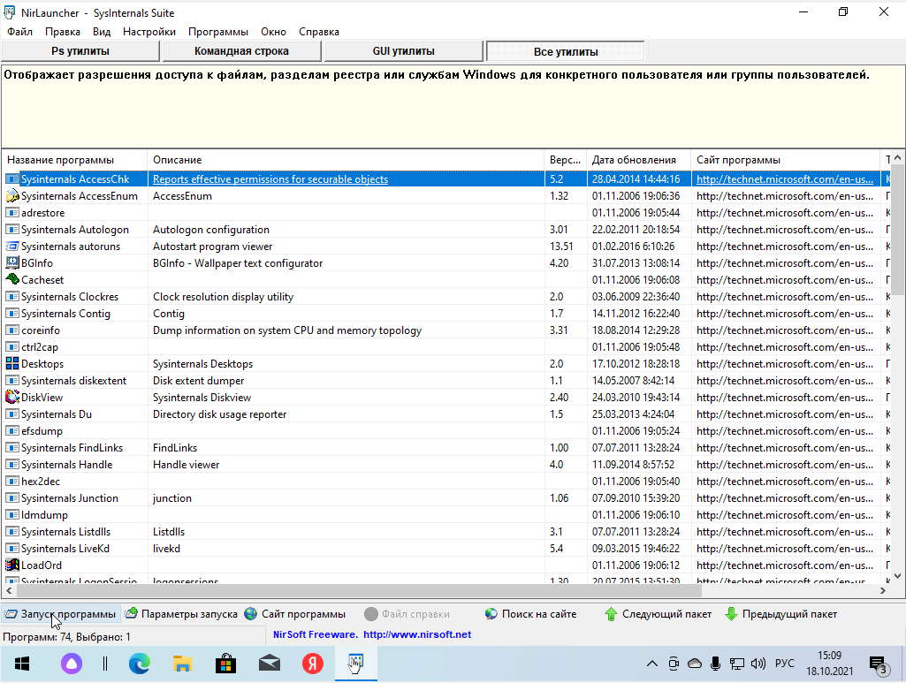

Sysinternals Suite - большой набор полезных утилит для диагностики и устранения различного рода неполадок системы от Марка Руссиновича.
Основное меню программы Sysinternals Suite содержит все утилиты.
В состав пакета входят следующие системные утилиты: AccessChk, AccessEnum, AdExplorer, AdRestore, Autologon, Autoruns, BgInfo, CacheSet, ClockRes, Contig, Ctrl2Cap, DebugView, DiskExt, DiskMon, DiskView, Disk Usage (DU), EFSDump, FileMon, Handle, Hex2dec, Junction, LDMDump, ListDLLs, LiveKd, LoadOrder, LogonSessions, NewSid, NTFSInfo, PageDefrag, PendMoves, PortMon, ProcessExplorer, Process Monitor, ProcFeatures, PsExec, PsFile, PsGetSid, PsInfo, PsKill, PsList, PsLoggedOn, PsLogList, PsPasswd, PsService, PsShutdown, PsSuspend, RegDelNull, RegJump, RegMon, RootkitRevealer, SDelete, ShareEnum, ShellRunas, SigCheck, Streams, Strings, Sync, TCPView, VolumeID, WhoIs, WinObj, ZoomIt.
На главном экране можно отобразить Ps утилиты, Командную строку, GUI утилиты.

Утилита Psinfo выводит основные сведения о системе
Утилита coreinfo Выдает информацию, помогающую изучению взаимосвязей процессоров, кэша, NUMA узлов и сокетов вашей системы.
Утилита RamMap для анализа использования физической памяти.
Отображение TCP-портов в системе
.Утилита Disk Monitor фиксирует все операции с жестким диском. Кроме того, может исполнять роль индикатора активности в системном трее при обращении программ к жёсткому диску.
Утилита Desktops